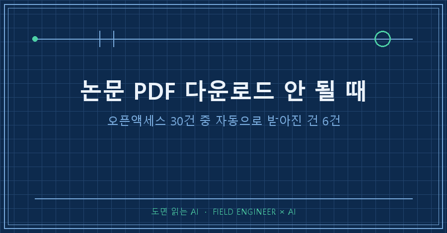
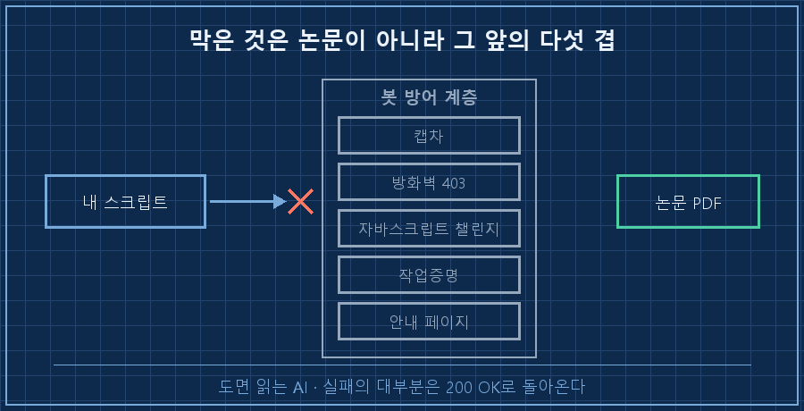
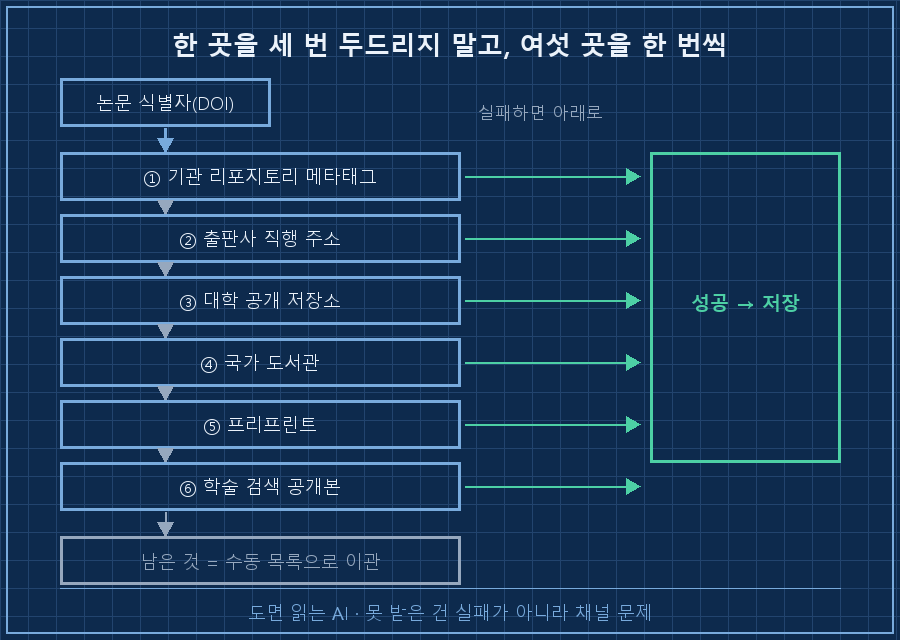
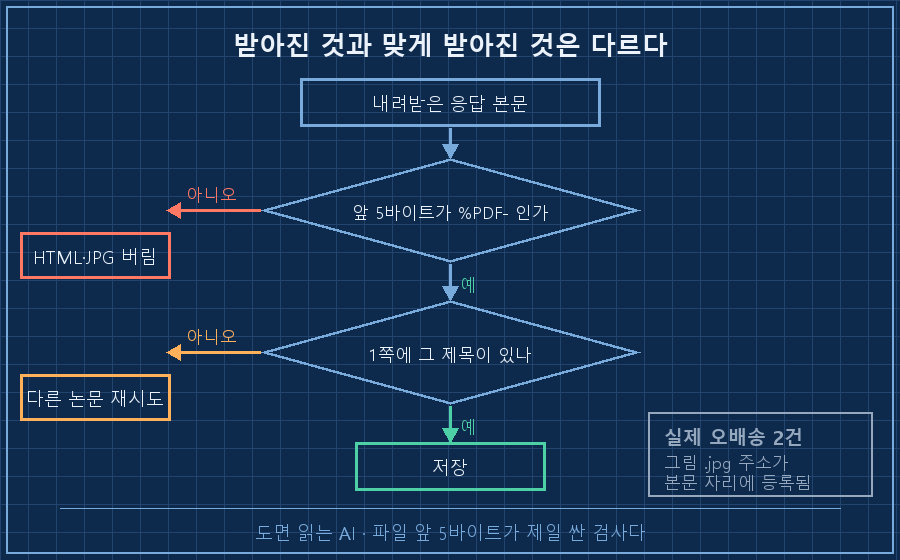

논문 PDF 다운로드를 서른 건 걸어두고 다른 일 하다 돌아왔는데, 폴더에 파일이 여섯 개 있었어요.
전부 오픈액세스로 표시된 것들이었습니다. 돈 내고 볼 필요 없다고 검색 API가 직접 알려준 논문들이요. 그런데 자동으로 받아진 건 6건이고, 나머지 24건은 각자 다른 이유로 막혀 있었습니다.
먼저 답부터 적을게요.
논문 PDF 다운로드가 안 되는 건 대체로 권한 문제가 아니라 경로 문제입니다. 오픈액세스는 "누구나 볼 권리가 있다"는 표시지, "스크립트가 바로 받을 수 있다"는 뜻이 아니거든요. 출판사 페이지 하나만 두드리다 실패하는 것과, 같은 논문의 다른 사본을 순서대로 찾아보는 건 결과가 꽤 다릅니다.
2026년 9월 기준, 윈도우 PC에서 파이썬으로 문헌을 긁어모으는 상황 얘기예요. 공개 보고서나 표준 초안을 모을 때도 구조는 똑같습니다.
1. 오픈액세스인데 왜 막힐까요
막힌 24건을 열어보니 실패 사유가 다섯 종류로 갈리더라고요. 응답만 보면 다 똑같은 실패인데 실제 화면은 전부 달랐습니다.
# 실제 걸린 다섯 유형을 한 화면에 모아 적은 것입니다
[FAIL] 403 Forbidden — 본문 대신 방어 서비스의 차단 안내 HTML
[FAIL] 200 OK — PDF가 아니라 "사람인지 확인 중" 캡차 페이지
[FAIL] 200 OK — "Preparing to download" 안내 페이지에서 정지
[FAIL] 200 OK — 브라우저에게 계산 문제를 풀리는 대기 화면
[ OK ] 200 OK — %PDF- 로 시작하는 진짜 파일여기서 중요한 걸 알았어요. 실패의 대부분이 200 OK로 돌아옵니다. 서버는 정상 응답을 준 게 맞고, 그 안에 든 게 논문이 아닐 뿐이에요. 상태 코드로 성공 여부를 세면 숫자가 부풀려집니다.
| 막히는 방식 | 화면에 뜨는 것 | 스크립트에 보이는 것 |
|---|---|---|
| 봇 매니저 캡차 | 사람인지 확인하는 체크박스 | 200 OK + 작은 HTML |
| 클라우드 방화벽 차단 | 접근이 거부되었습니다 | 403 |
| 자바스크립트 챌린지 | 잠시 기다려 주세요 | 200 OK + 스크립트만 든 문서 |
| 작업증명 챌린지 | 브라우저가 계산 중 | 200 OK + 대기 화면 |
| 중간 안내 페이지 | 다운로드를 준비 중입니다 | 200 OK + 안내문 |
제 일은 공장 설비 제어 쪽인데, 뭘 만들기 전에 남이 먼저 해둔 자료부터 뒤지는 게 시간의 절반이에요. 사람 손으로 3분이면 되는 걸 스크립트가 못 하고 있던 셈입니다..

2. 우회가 아니라, 다른 사본을 찾는 순서
여기서 방향을 정해야 했어요. 캡차를 뚫을 것인가, 아니면 같은 논문의 다른 공개 사본을 찾을 것인가.
앞쪽은 안 했습니다. 봇 방어 우회는 이용약관 위반이고, 오픈액세스 논문은 애초에 합법 사본이 여러 군데 있는 경우가 많거든요. 그래서 시도 순서를 이렇게 고정했어요.
1. 기관 리포지토리의 메타 태그. 대학·연구소 저장소는 문서 페이지 <head>에 PDF 실주소를 citation_pdf_url로 적어둡니다. 여기가 제일 잘 열려요.
2. 출판사가 공식으로 여는 직행 주소. 논문 식별자(DOI)를 끼워 넣으면 본문 파일로 바로 보내주는 형식을 쓰는 곳이 있습니다.
3. 대학 도서관 계열 공개 저장소. 저자 최종본이 올라와 있는 경우가 많습니다.
4. 국가 도서관 아카이브.
5. 프리프린트 저장소. 심사 전 원고라 그림 번호가 다를 수 있어 뒤에 씁니다.
6. 학술 검색 서비스의 공개본 필드. 마지막 보루였는데, 앞의 다섯이 다 못 찾은 사본을 여기서 두 건 건졌어요.
1번에서 한 번 크게 헤맸습니다. 메타 태그에 적힌 주소가 /bitstream/uuid.../paper.pdf 같은 상대경로였거든요. 그대로 요청하면 아무 데도 안 닿습니다. 문서 페이지 주소와 합쳐줘야 해요.
# 재구성 예시 — 메타 태그의 PDF 주소는 상대경로일 수 있다
from urllib.parse import urljoin
raw = soup.find("meta", {"name": "citation_pdf_url"})["content"]
pdf_url = urljoin(page_url, raw) # 이 한 줄이 없어서 한참 헤맸습니다여러분은 자료 수집을 자동화할 때 실패한 걸 몇 번까지 재시도해 보시나요? 저는 한 곳을 세 번 두드리는 것보다 여섯 곳을 한 번씩 도는 쪽이 훨씬 많이 건졌어요.

3. 받아진 파일이 PDF가 아닐 수도 있어요
이게 제일 아찔했던 부분입니다.
검색 서비스가 알려준 본문 주소 중에 논문 그림 파일을 가리키는 게 섞여 있었어요. 출판사 이미지 서버의 .jpg 주소가 본문 PDF 자리에 잘못 등록돼 있던 겁니다. 확인한 것만 2건.
그냥 저장했으면 이름은 논문.pdf인데 내용물은 그림 한 장인 파일이 폴더에 앉아 있었겠죠. 열어보기 전까진 확보한 줄 알았을 거고요..
그래서 저장 직전에 두 겹을 넣었습니다.
# 재구성 예시 — 저장 전 2단 검증
if not body.startswith(b"%PDF-"): # ① 파일 앞 5바이트
return "not_pdf"
first_page = extract_text(body, page=1) # ② 1쪽 텍스트에 제목이 있나
if not title_words_found(first_page):
return "wrong_paper"①은 앞 5바이트만 보는 검사예요. PDF는 예외 없이 %PDF-로 시작하니까 HTML이든 JPG든 여기서 전부 걸립니다.
②는 다른 걸 잡습니다. PDF는 맞는데 엉뚱한 논문이 온 경우요. 1쪽 텍스트를 뽑아 제목 단어가 있는지만 봤고, 받은 파일 전량을 이걸로 훑었습니다.
설비 쪽에서 배선 검사할 때 도통만 보고 넘어가면 사고가 납니다. 선은 붙어 있는데 엉뚱한 단자에 붙어 있는 경우가 있거든요. 받아진 것과 맞게 받아진 것은 다른 얘기예요.

따라 하실 수 있게 5단계로
전제: 파이썬 3 + requests. 유료 구독이나 기관 계정 없이, 공개 사본만 대상으로 합니다. 2026년 9월 기준이에요.
1. 오픈액세스인 것만 목록으로 뽑습니다. 공개 학술 색인 API에 오픈액세스 조건을 걸어 검색하고, 제목 키워드로 한 번 더 거릅니다.
2. 한 논문당 후보 주소를 여러 개 만듭니다. 위 여섯 경로를 순서대로 시도하는 함수 하나면 됩니다.
3. 응답 코드가 아니라 내용으로 판정합니다. 200이어도 크기가 몇십 KB면 거의 안내 페이지예요.
4. 저장 직전에 %PDF-와 1쪽 제목을 봅니다. 이 두 줄이 오배송을 잡습니다.
5. 못 받은 건 수동 목록으로 넘깁니다. 저는 17건이 남았는데 전부 브라우저로는 열리는 문서였어요. 지우지 않고 제목과 주소를 표로 만들어 문서 뒤에 붙였습니다.
확인 방법: 받은 파일을 폴더에서 크기순으로 정렬해 보세요. 유독 작은 파일(수십 KB)이 섞여 있으면 논문이 아니라 차단 안내문입니다. 그런 게 하나도 없으면 검증이 도는 거예요.
결과는 자동 16건, 수동 이관 17건. 처음 6건에서 시작한 걸 생각하면 순서 하나 만든 값은 했습니다!
미리 답해두는 질문 셋
Q. 그냥 브라우저로 하나씩 받으면 안 되나요?
됩니다. 저도 17건은 그렇게 넘겼어요. 다만 자동화 목적을 "전부 받기"로 잡으면 실패합니다. 목적은 손으로 처리할 목록을 줄이는 것이에요. 서른 건이 열일곱 건이 되면 그날 저녁에 끝낼 분량이 되죠.
Q. 캡차나 봇 방어를 뚫는 방법은 없나요?
찾지 않았고 권하지도 않습니다. 이용약관 위반이고, 애초에 그 방어는 자동 수집을 막으려고 켜둔 거예요. 오픈액세스 문헌은 합법 사본이 여러 군데 있으니 그쪽을 뒤지는 게 빠르고 안전합니다.
Q. 한 서비스가 "본문 없음"이라고 하면 없는 건가요?
아니더라고요. 사본이 없다고 나온 논문을 다른 검색 서비스에서 찾은 게 두 건 있었어요. 색인마다 수집 범위가 다릅니다. "없다"는 답도 한 곳만 믿지 않는 편이 나아요.
여섯 건에서 멈췄으면 그날 결론은 "자료가 별로 없다"였을 겁니다. 실제로는 자료가 아니라 경로가 없었던 거였고요. 막힌 경로와 뚫린 경로는 makefield.ai에 계속 갱신해 둘게요.
태그: #논문PDF다운로드 #오픈액세스논문 #논문자동수집 #논문다운로드안될때 #PDF다운로드403 #파이썬크롤링 #문헌조사자동화 #OpenAlex #자료수집자동화 #AI자료조사 #AI에게일시키기 #AI결과물검수 #파이썬자동화 #개인AI에이전트 #도면읽는AI